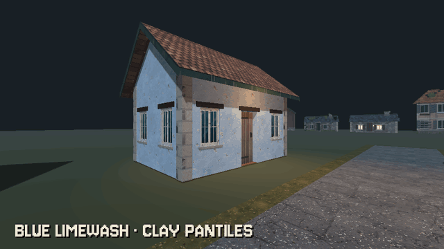

Tutorials › Re-Finish a House
How to Re-Finish a House in Godot 4
Name a model's surfaces by their role and give a node a table of names and texture families: every surface takes its material, and one property swaps the whole house from lived in to abandoned.

A model's surfaces can carry names, and a name is enough to re-finish a house. An ArrayMesh keeps a name for each surface (a glTF's material names arrive as them, and a modular kit can name each part by its role: an outside wall's face, a roof, a floor). This node, under a house, sets a material on every surface whose name is in its table, and swaps every finished surface from lived in to abandoned with one property, by the materials' file names. The mesh is untouched, so the same piece can wear another finish elsewhere.
Script: surface_finish.gd (MIT) · Godot 4.3 or newer · its folder on GitHub
How to use it
- Add a
Nodeunder the house (or a row of houses) and attachsurface_finish.gd; its class isSurfaceFinish. It finishes everyMeshInstance3Dunder its parent. - Name your meshes' surfaces by their role: in Blender the material names your glTF carries, in code
ArrayMesh.surface_set_name(). Ask a mesh withmesh.surface_get_name(i). - Put the materials in one folder, each named
<family>_<state>.tres(wall_limewash_blue_lived.tres,wall_limewash_blue_abandoned.tres), and setfolderto it. - Fill
finisheswith surface names to families, e.g.{"vi_wall_out": "wall_limewash_blue", "vi_roof": "roof_tiles_clay"}. - Set
statetolivedorabandoned: every finished surface swaps at once. A family with no material for that state is skipped; callapply()again after you add meshes.
What it needs
- Godot 4.3 or newer.
- Meshes whose surfaces carry names (ArrayMesh surface names) and a folder of materials named
<family>_<state>.tres.
Try it free
The Cordatix PSX Horror Free Sampler carries this script as cordatix/psx_horror_village_textures/sampler/surface_finish.gd, with a small stone cottage of the free village pieces to try it on and 13 of the pack's textures with their materials (a blue limewash wall, clay pantiles, a roller-printed room wall, painted floorboards and a panelled door, in their states, the wall also burnt and the roof also under snow and burnt). M in the sampler's demo room opens its Village Textures taste: the cottage re-finished lived in, abandoned, under snow and burnt. The pack's own re-finish node adds finishes by group, the village's winter and burnt looks, the PSX look and the house builder's houses.
How it was tested
In Godot 4.3 and 4.7.2, in the free sampler's project: a wall with a window and a roof end of the free village pieces, the script's table naming the outside wall's face and the roof: they wear the pack's blue limewash and clay pantiles, lived in, and state abandoned swaps both to their abandoned textures.
The code
class_name SurfaceFinish
extends Node
## How to Re-Finish a House in Godot 4
## Cordatix Godot 4 PSX tutorials, MIT licensed: https://github.com/GoldenSparrow-Dev/cordatix-godot-psx-tutorials
## The devlog: https://cordatix.itch.io/cordatix-psx-horror-village-textures/devlog/1745146/how-to-re-finish-a-house-in-godot-4-cordatix-psx-horror-village-textures
## Re-finish a house by its surfaces' names (Godot 4.3+). A mesh's surfaces can carry names: an ArrayMesh's
## surface_get_name() (the material's name in a glTF, the role a kit gave each part). This node sets a material
## override on every surface under its parent whose name is in `finishes`, so one model takes a new finish in place,
## and it swaps every finished surface between states (lived and abandoned) by the materials' file names:
## <folder>/<family>_<state>.tres.
## Which surface takes which texture family, e.g. {"vi_wall_out": "wall_limewash_blue", "vi_roof": "roof_tiles_clay"}.
@export var finishes: Dictionary = {}
## Where the materials are: <folder>/<family>_<state>.tres.
@export_dir var folder := "res://cordatix/psx_horror_village_textures/materials"
@export_enum("lived", "abandoned") var state := "lived":
set(v):
state = v
if is_inside_tree():
apply()
func _ready() -> void:
apply()
## Sets the finishes on every surface named in `finishes` under the parent; returns how many it set.
func apply() -> int:
var n := 0
for node in get_parent().find_children("*", "MeshInstance3D", true, false):
var mi := node as MeshInstance3D
var mesh := mi.mesh as ArrayMesh
if mesh == null:
continue
for i in mesh.get_surface_count():
var family: Variant = finishes.get(mesh.surface_get_name(i))
if family == null:
continue
var path := "%s/%s_%s.tres" % [folder, family, state]
if not ResourceLoader.exists(path):
continue # no material for this family in this state: the surface keeps its own
mi.set_surface_override_material(i, load(path) as Material)
n += 1
return n
The devlog and the pack
The step-by-step walkthrough is the devlog How to Re-Finish a House in Godot 4 (Cordatix PSX Horror Village Textures) on itch.io, written for Cordatix PSX Horror Village Textures, a PS1-style asset pack by Cordatix for Godot 4, Unity, Unreal and Blender.